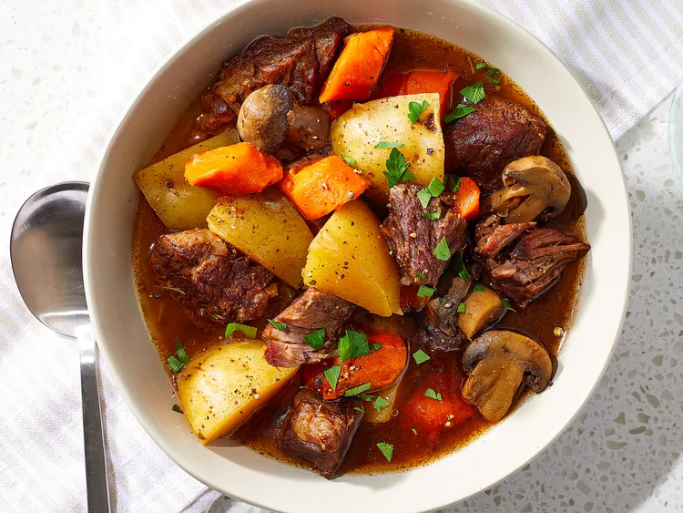

Pot Beef Stew

Description
This Instant Pot stew recipe is the ultimate, hearty, melt-in-your-mouth comfort food.
It's so easy to make in an Instant Pot for a simple midweek dinner.
Ingredients
- 1 tablespoon butter
- 1 pound beef chuck, cut into 1-inch cubes
- 4 Yukon Gold potatoes, cubed
- 1 ½ cups mushrooms, halved
Steps
- Gather all ingredients.
- Turn on a multi-functional pressure cooker (such as Instant Pot) and select the Sauté function.
- Return all beef chuck cubes to the pot. Add potatoes, mushrooms, onion, carrots, and garlic.
- Close and lock the lid. Select Meat/Stew function, according to t
he manufacturer's instructions; set the timer for 35 minutes. Allow 10 to 15 minutes for pressure to build
- Release pressure using the natural-release method, according to the
manufacturer's instructions, 10 to 40 minutes. Unlock and remove the lid.